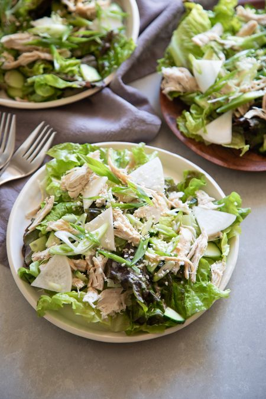

Chicken salad with tahini dressing

Description
A quick weeknight salad with a refreshing crunch and savory sesame flavor, this recipe relies on rotisserie or leftover cooked chicken. With that done, you’ll have dinner on the table in less than 30 minutes!
During the busy work week, I love turning to simple salads for dinner, and this is one of my favorites.
It comes together in less than half an hour and relies on leftover chicken, cold from the fridge, or a rotisserie bird picked up on the way home from work. I can easily prep enough ingredients and extra dressing to store for a quick lunch the day after.
The chicken is served over a bed of romaine lettuce, cucumbers, and radishes. The dressing is a savory mixture of tahini, toasted sesame oil, soy sauce, and honey.
Ingredients
For the salad
- 2 scallions, thinly sliced on a bias
- 4 ounces daikon radish, cut into thin slices
- 1 head (about 1/2 pound) romaine lettuce, leaves separated
- 1 English cucumber, quartered lengthwise and thinly sliced
- 1 pound (about 2 cups) shredded cooked chicken
- 1 tablespoon toasted sesame seeds, to serve
For the dressing
- 6 tablespoons tahini
- 6 tablespoons water
- 2 tablespoons soy sauce
- 2 tablespoons toasted sesame oil
- 1 tablespoon rice vinegar
- 1 teaspoon honey
- 2 teaspoons fresh ginger, finely grated
- 2 teaspoons garlic, finely grated
- 1/2 teaspoon salt
Tips and tricks for making chicken salad
A few tips when making this weeknight-friendly sesame salad:
- Use a thin-skinned cucumber like English, Persian, or Japanese.
- If you don’t have leftover chicken or a rotisserie chicken, you can also poach chicken breasts in salted simmering water until cooked through.
- If the dressing is too thick, add more water, half a tablespoon at a time, until you reach a viscous but pourable consistency.
- I use whole leaves in this salad, which means it’s not a salad you’ll toss together in a bowl and eat with a fork. Rather it’s a plated salad meant to be eaten with a knife and fork for a more satisfying, slow-paced meal. However, if you want to make it just a fork salad, slice the romaine and toss everything together with the dressing in the serving bowl.
Method
-
Prep the salad ingredients:
In a small bowl of iced water, soak the scallions and radish until ready to use. This will keep them crisp.
-
Make the dressing:
In a small bowl, whisk the tahini, water, soy sauce, toasted sesame oil, rice vinegar, honey, grated ginger and garlic, and salt until very smooth.
-
Assemble the salad:
Divide lettuce leaves, cucumbers, radishes, and shredded chicken between 4 serving plates. Drizzle each portion generously with tahini dressing. Top with drained and dried scallions, then garnish with toasted sesame seeds. Serve immediately.